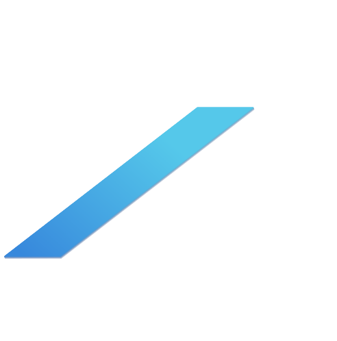
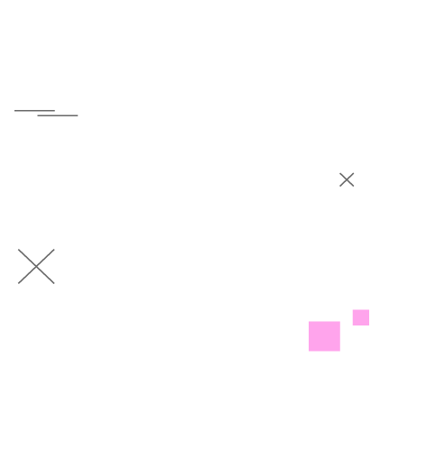
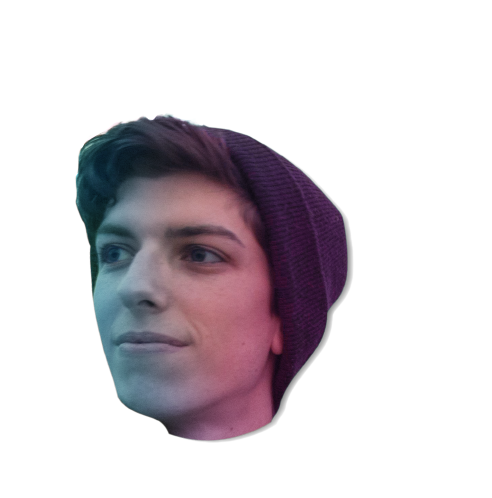
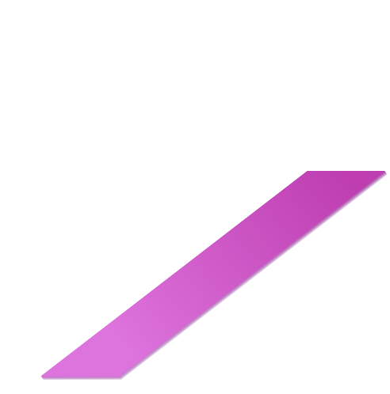
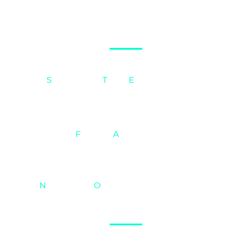

Ciao,
sono Stefano Ferrari, studio Design della Comunicazione al Politecnico di Milano.
Mi piace girare video e scattare foto, ho una grande passione per i videogiochi, il web e l'informatica.
Se vuoi saperne di più su di me scorri la pagina!
Ho 20 anni, vivo a Cremona e studio Design della Comunicazione al Politecnico di Milano.
Sono un appassionato di videogiochi e informatica. Ho iniziato a pensare ad un futuro nel mondo della grafica e della programmazione grazie uno stage, organizzato dal Politecnico, durante il quale ho imparato le basi del linguaggio C# e Unity 3D.
Per questo motivo, dopo il diploma ho frequentato un anno di Ingegneria Informatica, ma alla fine ho capito che non faceva per me e ho effettuato il passaggio a Design.
Qui ho trovato un ambiente molto più familiare, dove posso dedicarmi anche ad altri miei interessi come il disegno, la fotografia e in particolare il videomaking.
Sono un appassionato di videogiochi e informatica. Ho iniziato a pensare ad un futuro nel mondo della grafica e della programmazione grazie uno stage, organizzato dal Politecnico, durante il quale ho imparato le basi del linguaggio C# e Unity 3D.
Per questo motivo, dopo il diploma ho frequentato un anno di Ingegneria Informatica, ma alla fine ho capito che non faceva per me e ho effettuato il passaggio a Design.
Qui ho trovato un ambiente molto più familiare, dove posso dedicarmi anche ad altri miei interessi come il disegno, la fotografia e in particolare il videomaking.
prova
prova
prova